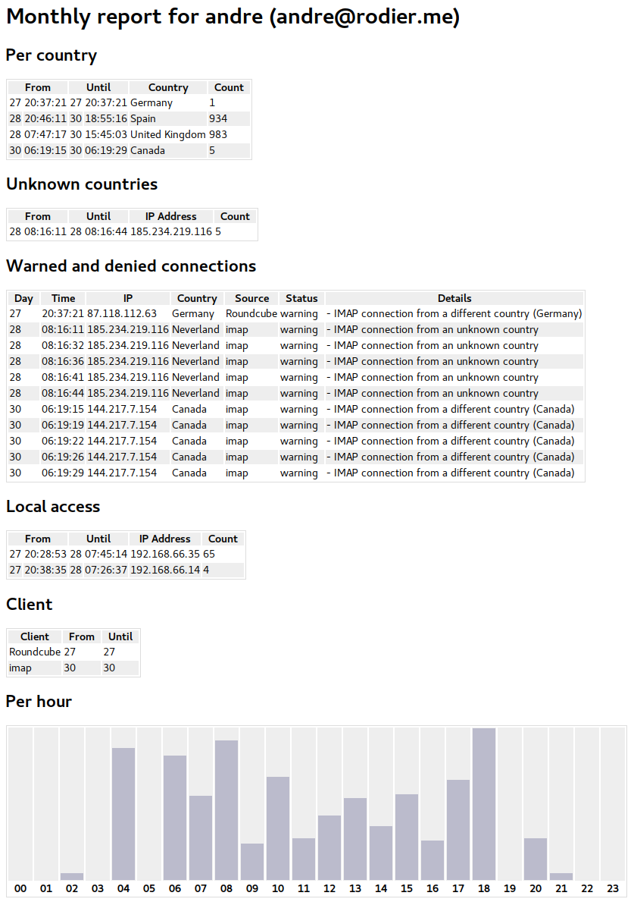

Email access monitoring
This optional feature is for users who are genuinely concerned about the confidentiality of their emails, and want to be aware as soon as someone else is opening their emails.
The default settings should be appropriate for most users. However, the users who have unusual habits will be able to tune the system according to their needs.
- It can send you warning, in real time, when something unusual is happening, which is explained below.
- It can block the connection, for instance from blacklisted IP addresses, and send you a warning in real time.
- It logs all your connection information in a small database. Each user can then do some querying and reporting easily.
- A monthly report is sent the first day of every month, containing the analysis of the previous month.
- When the “impersonate” feature is used to access one user’s emails, an alert is sent in real time to this user.
Note
Real time alerts are sent by email and XMPP, to your account or an external account if configured so.
Scoring system
When this feature is activated, every time your emails are accessed, a sequence of analysis is executed. Every violation of a rule increase a score by a number of points. Above a certain score, a warning is sent. Above another score, the connection is denied.
- The scoring system can be easily customised, globally or per user.
- Only one warning is sent per day, per connection.
- When a connection is denied, email alerts are limited to one per hour.
The default points should be satisfactory for the standard needs, so it is better to tune other parameters, like whitelisting IP addresses or countries.
Any customisation should be done in the Homebox configuration directory ~/.config/homebox/.
Default settings
- Warning score: 40
- Deny score: 120
Unusual behaviours
Unusual behaviours are defined below, from the highest score to the lowest.
Connection from a blacklisted IP address
If you are checking your emails from another place, the system will check the reputation of the IP address, and will warn you if the place is not safe. The software used is rblcheck. The more an IP address is blacklisted, the more you are likely to receive a warning.
Points: 60 points per blacklist record.
By default, the following lists are checked:
- sbl.spamhaus.org
- xbl.spamhaus.org
- pbl.spamhaus.org
- bl.spamcop.net
- psbl.surriel.com
- dul.dnsbl.sorbs.net
Warning
When an IP address is blacklisted two times, the connection will be denied.
Customisation
If for any reason, you need to connect from an IP address you know is blacklisted, you can whitelist the IP address, by
creating a file ip-whitelist.txt inside your homebox configuration directory ~/.config/homebox.
This file can look like this:
# Budapest UPC Magyarorszag Kft: 176.63.24.0/21 # Swiss ressort 81.17.27.131
Comments and blank lines are not mandatory and are ignored. You can also whitelist entire networks using CIDR blocks.
Although it is not recommended, you can also change the blacklisting score globally:
access_check: ip: rbl_malus: 40
IP addresses blacklisted by fail2ban
If an IP address has been before blacklisted by fail2ban, a score of 10 will be added per blacklist. So, if an IP address has been banned 5 time in the last log file, the score will be 50 points.
This is a safeguard to ensure a brute force attack against your email account is rejected, even if the password has been found.
If you want to tune this, you can change the fail2ban score to another value, or even to 0 to disable it entirely:
access_check: ip: fail2ban_malus: 5
Connection from a foreign country
If for instance you are living in France, there is no reason you would connect from China or Russia, except if you are often travelling in these countries. In this case, you can add the country code to the list of trusted countries.
You can trust some countries for the whole system, by changing the access_check.countries.trust values:
access_check: countries: trust: [ 'FR', 'DE', 'GB', 'ES' ]
If you prefer to do it for one user only you can define a list of “trusted” countries, in the user’s configuration file.
The user configuration file should be called access-check.conf, inside the folder ~/.config/homebox.
# A comma separated list of country codes to trust (e.g. FR,DE,GB) COUNTRIES_TRUST='RU,DE,FR'
For instance, in a family, parents are travelling more than children, so it make more sense to do it per users.
Connection at unusual time
This is a minor check, but it helps to warns you, especially when this fact is happening along with other suspicious behaviours. For instance, accessing your emails at midnight, from an IP address that is blacklisted will definitely generate a warning.
Points: 10 points per hour outside the working hours. For instance, if you defined your working hours from 9am to 6pm, a connection at 2am will generate 70 points, and a warning will be sent.
Note
Warnings are limited to one per day only.
If you have unusual working hours, or if you want to disable this entirely, you can set for instance 0-23. Times are specified in 24h mode.
access_check: time: start: 9 end: 22
Other considerations
Connections from LAN
Connections from your local network are actually trusted, but logged. Other scripts might be added later to offer more control.
Blacklisting countries
You can blacklist entire countries, but system wide only for now.
For instance, here how to deny all IMAP connections, on the whole system, to Russia and China:
access_check: countries: blacklist: [ 'RU', 'CN' ]
Customising the alert address
By defaults, the alerts will be sent to the postmaster and the user under attack, using both email and XMPP.
You can also use an external email address, by specifying the address globally, in the system.yml file:
access_check: ... alert_address: john.doe@protonmail.com ...
Finally, this can be done per user as well, by modifying the access-check.conf file, inside the folder
~/.config/homebox:
# Send alerts and XMPP warnings to an external address: ALERT_ADDRESS='other@protonmail.com'
It is advised to use an external address, to be sure a compromised account cannot be cleared from its alerts.
Detailed settings
These settings are visible in the defaults.yml file, in the repository:
access_check_default: active: false whitelist_bonus: 255 # Bonus to apply when an IP or country is whitelisted. Max value is 255 blacklist_malus: 255 # Malus to apply when an IP or country is blacklisted. Max value is 255 warning_score: 40 # Score threshold to generate a warning denied_score: 120 # Score threshold to deny a connection display_score: false # # Should we display the scores in the alerts ? # It is more informative for development # but it might be confusing for new users time: # Standard time range you are normally checking your emails. zone: auto # The timezone to consider when checking the access time. start: 8 # start-end: the more you are outside this range, the more malus points end: 18 # are added. 10 points per hour outside the range # Perhaps this will generate one warning if you check your emails # from home at midnight or at 2am. countries: # Countries check parameters trust: [] # A list of additional countries to trust, i.e. that will not generate points. # However, other restrictions are still applying (e.g. blacklisted IP address) blacklist: [] # A list of blacklisted countries. Connections from these countries will be denied. trust_home: true # Trust home country by default (the country where the box is hosted) foreign_malus: 40 # The number of points added when connecting from a foreign country unknown_malus: 40 # The number of points added when the country cannot be identified ip: rbl_malus: 60 # The number of points added to the score when an IP address is blacklisted fail2ban_malus: 10 # Malus to apply each time an IP address has blacklisted by fail2ban trust_home: true # Trust local network by default (e.g. 192.168.1.0/24)
Do not change the blacklist and whitelist scores, unless you know what you are doing. Due to Posix limitations, the maximum number returned by a script is 255. However, this number is internally evaluated to 1000, to make sure whitelisting an IP address is respected.
Example of messages
All messages are sent both by email and using XMPP if the Jabber server has been selected for installation.
This is the content of a message when an unusual connection has been detected. In this first example, the points are
detailed, because the system has been configured with the option display_score to true.
IMAP connection warning - User: andre (andre@homebox.space) - IP Address: 81.17.27.131 - Source: Roundcube - Final score: 60 points Details: - This IP address is blacklisted 1 times. (+60 points) IP Details: https://duckduckgo.com/?q=whois+81.17.27.131
The second example, this is a message when a connection has been denied, this time without the point details:
IMAP connection denied - User: andre (andre@homebox.space) - IP Address: 176.63.27.111 - Source: Roundcube Details: - This IP address is blacklisted 3 times. - Unusual early connection for Europe/Budapest (06:46) IP Details: https://duckduckgo.com/?q=whois+176.63.27.111
Last example, this is a message sent to a user, when the master account is used to access their emails:
Your emails are opened by the master user - IP Address: 176.63.27.152 - Access: warning - Source: Roundcube - Status: warning IP Details: https://duckduckgo.com/?q=whois+176.63.27.152
Customised access-check.conf
This file will be stored in ~/.config/homebox/access-check.conf
# Access check policy for Homebox # I will travel in these countries for a few months COUNTRIES_TRUST='FR,DE,ES' # I am travelling, so don't trust home till I come back COUNTRIES_TRUST_HOME='NO'
Monthly reports
The report can contains the following sections:
- Connections per country, if you are travelling.
- Unknown countries, with the IP addresses identified.
- Warned and denied connections, with the details of the warnings.
- Local access
- Client statustics (Roundcube / SOGo / IMAP)
- Statistics per hour of the day
Example of report
